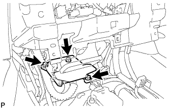
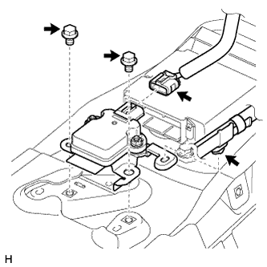
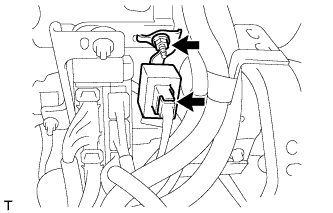
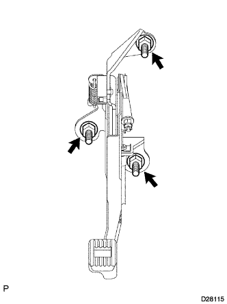
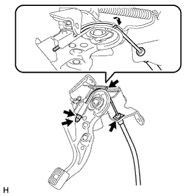

PARKING BRAKE PEDAL > REMOVAL |
| 1. DISCONNECT CABLE FROM NEGATIVE BATTERY TERMINAL |
| Condition | Waiting Time |
| Vehicle enrolled in G-BOOK system | 6 minutes |
| Vehicle not enrolled in G-BOOK system | 1 minute |
| 2. REMOVE LOWER NO. 1 INSTRUMENT PANEL AIRBAG ASSEMBLY |
Remove the lower No. 1 instrument panel airbag assembly (Click here).
| 3. REMOVE REAR CONSOLE BOX ASSEMBLY |
Remove the rear console box assembly (Click here).
| 4. REMOVE CENTER AIRBAG SENSOR ASSEMBLY |
|  |
Disconnect the connector.
Remove the 3 bolts and airbag sensor.
| 5. REMOVE YAW RATE AND ACCELERATION SENSOR |
|  |
Remove the 2 bolts and yaw rate and acceleration sensor.
Disconnect the connector.
Detach the clamp from the sensor bracket.
| 6. REMOVE TURN SIGNAL FLASHER ASSEMBLY |
|  |
Disconnect the connector.
Remove the nut and turn signal flasher.
| 7. REMOVE PARKING BRAKE CONTROL PEDAL ASSEMBLY |
|  |
Release the parking brake pedal.
Disconnect the parking brake switch connector.
Remove the 3 nuts and parking brake control pedal assembly.
| 8. REMOVE TRANSMISSION FLOOR SHIFT ASSEMBLY |
Remove the transmission floor shift assembly (Click here).
| 9. REMOVE NO. 1 PARKING BRAKE CABLE ASSEMBLY |
|  |
Remove the lock nut and adjusting nut.
Remove the clip.
Pull up the parking pedal claw.
Remove the No. 1 parking brake cable assembly.
Remove the 4 nuts and 3 bolts from the No. 1 parking brake cable assembly.
 |
Remove the lock nut, adjusting nut and No. 1 parking brake cable assembly from the parking brake equalizer.
Disconnect the No. 1 parking brake cable No. 3 clamp from the No. 1 parking brake cable.
| 10. REMOVE PARKING PEDAL PAD |
Remove the parking pedal pad.